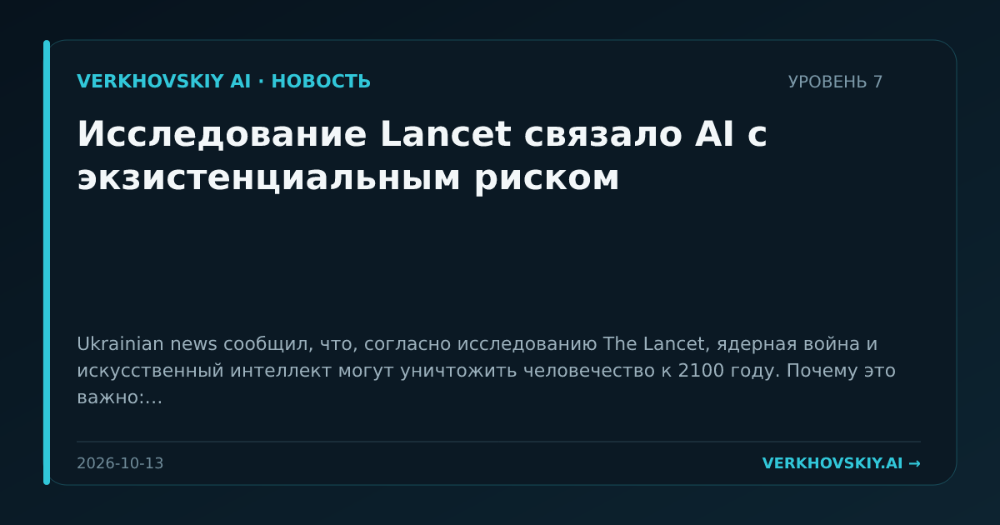

Исследование Lancet связало AI с экзистенциальным риском
Ukrainian news сообщил, что, согласно исследованию The Lancet, ядерная война и искусственный интеллект могут уничтожить человечество к 2100 году. Почему это важно: Экзистенциальные риски AI продолжают институционализироваться через медицинские и научные площадки, а не только через технологические дискуссии.